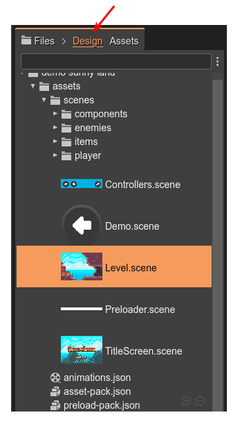
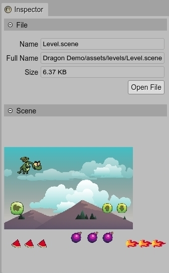

Files view
The Files view shows the files of the project. The files are displayed in a tree structure, like in many other file navigators.
Like the other content viewers present in the IDE, the Files view shows inline previews of a certain type of files. At the same time, you can zoom in/out them by pressing the Shift key and rolling the mouse wheel.
The Design and Assets sub-tabs
The main activities you do with Phaser Editor 2D are to create the scenes and pack the assets. For this reason, we added two sub-tabs to the Files view: Design and Assets. It allows you (we hope) to filter the files and show in the view only the files related to a certain activity.
When you select the Design tab, the view shows only the files you commonly edit with Phaser Editor 2D: the Scene files, the User Components files, the Animations files, the Asset Pack files.
When you select the Assets tab, the view shows only the files used as assets by the different editor: images, atlas files, audio files, video files, Asset Pack files, etc…
In both cases, empty folders are not shown. And all files are shown if no sub-tab is selected.
There is another usual activity in the editor: coding. JavaScript and TypeScript files are excluded in both filters. We think coding is not the strong point in the editor and we encourage you to use Visual Studio Code if possible. In any case, you always have the option of showing all files.
Inspector view integration
The Inspector view shows the properties of the objects selected in the active view or part. When you select a file in the Files view, the Inspector view displays different property sections of the file.
In all cases, the Inspector view shows the File section. It displays the Name, Full Name, Size, and a button to open the file in an editor.
In addition, plugins can provide their own file property sections for Inspector view. There are the cases of the images preview, the scenes preview or the Asset Pack Editor section.
